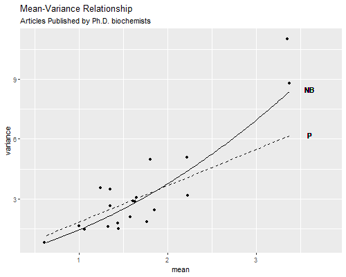

This addendum to the GLM notes covers extra-Poisson variation and the negative binomial model, with brief appearances by zero-inflated and hurdle models. The companion Stata and R logs illustrate fitting these models to data from Long (1990) on the number of publications by Ph.D. biochemists.
One of the key features of the Poisson distribution is that the variance equals the mean, so
\[ \newcommand{\var}{\operatorname{var}} \var(Y ) = E(Y ) = \mu \]
Empirically, however, we often find data that exhibit over-dispersion, with a variance larger than the mean. This is certainly the case with the Ph.D. biochemist data, where we have evidence that the variance is about 1.8 times the mean. We now consider models that accommodate this excess variation.
An interesting feature of the iteratively-reweighted least squares (IRLS) algorithm used in generalized linear models is that it depends only on the mean and variance of the observations. Nelder and Wedderburn (1972) proposed specifying just the mean and variance relationship, and then applying the algorithm. The resulting estimates are called maximum quasi-likelihood estimates (MQLE), and have been shown to share many of the optimality properties of maximum likelihood estimates (MLE) under fairly general conditions.
In the context of count data, consider the assumption that the variance is proportional to the mean. Specifically,
\[ \var(Y) = \phi E(Y) = \phi\mu \]
If \(\phi = 1\) then the variance equals the mean and we obtain the Poisson mean-variance relationship. If \(\phi > 1\) then the have over-dispersion relative to the Poisson distribution. If \(\phi < 1\) we would have under-dispersion, but this is relatively rare.
We then maintain the assumption that the log of the mean is a linear function of a vector of covariates, in other words we use a log link, so the model for the mean is
\[ \log(\mu) = X \beta \]
It turns out that applying the IRLS algorithm in this more general case involves working with weights \(w = \mu/\phi\). These are the Poisson weights \(w = \mu\) divided by \(\phi\), but the \(\phi\) cancels out when we compute the weighted estimator \((X'WX)^{-1}X'Wz\), where \(z\) is the working dependent variable. In other words, the estimator reduces to the Poisson MLE. This implies that Poisson estimates are MQLE when the variance is proportional (not just equal) to the mean.
The variance of the estimator in the more general case involves \(\phi\), and is given by
\[ \var(\hat{\beta}) = \phi (X'WX)^{-1} \]
where \(W = diag(\mu_1, \ldots , \mu_n)\), reducing to the Poisson variance when \(\phi = 1\). This means that Poisson standard errors will be conservative in the presence of over-dispersion.
The obvious solution is to correct the standard errors using an estimate of \(\phi\). The standard approach relies on Pearson’s \(\chi^2\) statistic, which is defined as
\[ \chi^2_p = \sum_{i=1}^{n} \frac{(y_u-\mu_i)^2}{\var(y_i)} = \sum_{i=1}^{n} \frac{(y_u-\mu_i)^2}{\phi \mu_i} \]
If the model is correct, the expected value of this statistic is \(n-p\). Equating the statistic to its expectation, and solving for \(\phi\), gives the estimate
\[ \hat{\phi} = \frac{\chi^2_p}{n-p} \]
In the biochemist example, \(\chi^2_p = 1662.55\) for a model with p = 6 parameters on n = 915 observations, which leads to \(\hat{\phi} = 1662.55/909 = 1.829\). We retain the Poisson estimates but multiply the standard errors by \(\sqrt{1.829}=1.352\), which inflates them by 35.2%.
A word of caution is in order. Normally one would consider a large value of Pearson’s \(\chi^2\) as evidence of lack of fit. What we are doing here is treating that as pure error to inflate our standard errors. Obviously this requires a high degree of confidence in the systematic part of the model, so we can be reasonably sure that the lack of fit is not due to specification errors but just over-dispersion.
An alternative approach that often gives similar results is to use a robust estimator of standard errors in the tradition of Huber (1967) and White (1980).
An alternative approach to modeling over-dispersion in count data is to start from a Poisson regression model and add a multiplicative random effect \(\theta\) to represent unobserved heterogeneity. This leads to the negative binomial regression model.
Suppose that the conditional distribution of the outcome \(Y\) given an unobserved variable \(\theta\) is indeed Poisson with mean and variance \(\theta \mu\), so
\[ Y | \theta \sim P(\mu\theta) \]
In the context of the Ph.D. biochemists, \(\theta\) captures unobserved factors that increase (if \(\theta > 1\)) or decrease (if \(\theta < 1\)) productivity relative to what one would expect given the observed values of the covariates, which is of course \(\mu\) where \(\log \mu = x \beta\). For convenience we take \(E(\theta) = 1\), so \(\mu\) represents the expected outcome for the average individual given covariates \(x\).
In this model the data would be Poisson if only we could observe \(\theta\). Unfortunately we do not. Instead, we make an assumption regarding its distribution and “integrate it out” of the likelihood, effectively computing the unconditional distribution of the outcome. It turns out to be mathematically convenient to assume that \(\theta\) has a gamma distribution with parameters \(\alpha\) and \(\beta\). This distribution has mean \(\alpha/\beta\) and variance \(\alpha/\beta^2\), so we take \(\alpha = \beta = 1/\sigma^2\), which makes the mean of the unobserved effect one and its variance \(\sigma^2\).
With this information we can compute the unconditional distribution of the outcome, which happens to be the negative binomial distribution. The density is best written in terms of the parameters \(\alpha, \beta\) and \(\mu\) as done below, although you must recall that in our case \(\alpha = \beta = 1/\sigma^2\), so there’s just one more parameter compared to a Poisson model.
\[ \Pr\{Y = y\} = \frac{\Gamma(\alpha+y)}{y!\Gamma(\alpha)} \frac{\beta^\alpha y^\mu}{(\mu+\beta)^{\alpha+y}} \]
This distribution is best known as the distribution of the number of failures before the \(k\)-th success in a series of independent Bernoulli trials with common probability of success \(\pi\). The density corresponding to this interpretation can be obtained from the expression above by setting \(\alpha = k\) and \(\pi = \beta/(\mu + \beta)\).
The negative binomial distribution with \(\alpha = \beta = 1/\sigma^2\) has mean and variance
\[ E(Y) = \mu \quad\mbox{and}\quad \var(Y) = \mu(1 + \sigma^2\mu), \]
a quadratic function of the mean.
If \(\sigma^2 = 0\) there is no unobserved heterogeneity, and we obtain the Poisson variance. If \(\sigma^2 > 0\) then the variance is larger than the mean. Thus, the negative binomial distribution is over-dispersed relative to the Poisson.
Interestingly, these moments can be derived using the law of iterated expectations without assuming that the unobservable has a gamma distribution; all we need are the conditional moments \(E(Y|\theta) = var(Y|\theta) = \theta\mu\) and the assumption that the unobservable has mean one and variance \(\sigma^2\).
The unconditional mean is simply the expected value of the conditional mean
\[ E(Y) = E_{\theta}[E_{Y|\theta}(Y|\theta) = E_{\theta}(\theta\mu) = \mu E_\theta(\theta) = \mu \]
where we used subscripts to clarify over which distribution we are taking expectations. The unconditional variance is the expected value of the conditional variance plus the variance of the conditional mean
\[ \begin{aligned} \var(Y) & = E_\theta[\var_{Y|\theta}(Y|\theta)] + \var_\theta[E_\theta(\theta\mu)] \\ & = E_\theta(\theta\mu) + \var_\theta(\theta\mu) \\ & = \mu E_\theta(\theta) + \mu^2 \var_\theta(\theta) \\ & = \mu + \mu^2\sigma^2 = \mu(1 + \mu\sigma^2) \end{aligned} \]
again using a subscript to clarify over which distribution we are taking expectation or computing variance.
The model can be fit by maximum quasi-likelihood, using only the mean-variance relationship, provided \(\sigma^2\) is known or estimated separately. It is possible to derive an estimate of \(\sigma^2\) using Pearson’s \(\chi^2\) statistic, but this requires alternating between estimating \(\mu\) given \(\sigma^2\) and then \(\sigma^2\) given \(\mu\), so this approach loses the simplicity it has in the Poisson case.
Both Stata and R can fit the negative binomial model described here using maximum likelihood, please refer to the computing logs for details. The table below compares estimates and standard errors for three models.
Both sets of parameter estimates would lead to the same conclusions. Looking at the standard errors, we see that both approaches to over-dispersion produce very similar estimates, and that ordinary Poisson regression substantially underestimates the standard errors.
Because the Poisson model is a special case of the negative binomial when \(\sigma^2 = 0\), we can use a likelihood ratio test to compare the two models. There is, however, a small difficulty. Because the null hypothesis corresponding to the Poisson model is on a boundary of the parameter space, the likelihood ratio test statistic does not converge to a \(\chi^2\) distribution with one d.f as one might expect. Simulations suggest that the null distribution is better approximated as a 50:50 mixture of zero and a \(\chi^2\) with one d.f. An alternative is simply to note that treating the test statistic as \(\chi^2\) with one d.f. results in a conservative test.
For the biochemist data the LR \(\chi^2\) statistic is 180.2 on one (or a mixture of one and zero) d.f., which is highly significant with or without the adjustment for the boundary condition. We conclude that the negative binomial model captures significant over-dispersion.
At this point you may wonder whether the over-dispersed Poisson model or the negative binomial model provides a better description of the data. Because the over-dispersed Poisson model is not fitted by maximum likelihood we can’t use likehood-based measured such as AIC or BIC, the Akaike or Bayesian information criteria. We can, however, compare the variance functions. We use fitted values from one of the models to create groups, calculate the mean and variance for each group, and plot these against the variance functions \(\phi \mu\) for Poisson and \(\mu(1+\sigma^2\mu)\) for the negative binomial, where \(\mu\) is the mean and \(\phi\) and \(\sigma^2\) are the overdispersion estimates from the two models. Please refer to the computing logs for calculation details, which result in the figure below.

We see that the over-dispersed Poisson model does a pretty good job capturing the mean-variance relationship for the bulk of the data, but fails to capture the high variances of the most productive scholars. The negative binomial variance function is not too different, but being a quadratic can rise faster and does a better job at the end. These results suggest that the negative binomial model provides a better description of the data than the over-dispersed Poisson model.
We note in closing this section that there are alternative formulations of the negative binomial model. In particular, Cameron and Trivedi (1986) describe two variants called NB1 and NB2, with linear and quadratic variance functions. The formulation given here corresponds to NB2, and is the one in common use.
Another common problem with count data models, including both Poisson and negative binomial models, is that empirical data often show more zeroes than would be expected under either model. In the Ph.D. Biochemist data, for example, we find that 30% of the individuals publish no papers at all. The Poisson model predicts 21%, so it underestimates the zeroes by nine percentage points.
The zero-inflated Poisson model postulates that there are two latent classes of people. The “always zero”, which in our example would be individuals who never publish, and the rest, or “not always zero”, for whom the number of publications has a Poisson distribution with mean and variance µ > 0. The model combines a logit model that predicts which of the two latent classes a person belongs to, with a Poisson model that predicts the outcome for those in the second latent class. In this model there are two kinds of zeroes: some are structural zeroes from the always zero class, and some are random zeroes from the other class.
These models are very appealing, but interpretation is not always straightforward. In an analysis of number of cigarettes smoked last week, the latent classes have a natural interpretation: the “always zero” are non-smokers, to be distinguished from smokers who happen to smoke no cigarettes in a week, but one would be better off ascertaining whether the respondent smokes. When analyzing publications, the “always zero” could be respondents in non-academic jobs where publishing is not required or expected, but again it would be better to include the type of job as a covariate. In health research it is common to ask elderly respondents how many limitations they encounter in carrying out activities of daily living, such as getting up from a chair or climbing some stairs. It is common to observe more zeroes than expected in a Poisson model, but it is not clear what an “always zero” class would mean.
In the biochemist example, the model does solve the problem of excess zeroes, predicting that 29.9% of the biochemists will publish no articles, extremely close to the observed value of 30.0%. As it happens, the negative binomial model solves the problem too, predicting that 30.4% of the biochemists would publish no articles in the last three years of their Ph.D. Please refer to the Stata and R logs for calculation details.
There is also a zero-inflated negative binomial model, which uses a logit equation for the “always zero” class and then a negative binomial equation for the counts in the other class. This model effectively adds unobserved heterogeneity to the group not in the “always zero” class. To be honest I find this model a bit of overkill, as often introducing just the two latent classes or unobserved heterogeneity will suffice, as it does in the example at hand.
Another approach to excess zeroes is to use a logit model to distinguish counts of zero from larger counts, effectively collapsing the count distribution into two categories, and then use a truncated Poisson model, namely a Poisson distribution where zero has been excluded, for the positive counts. This approach differs from the zip models because the classes are observed rather than latent; one consists of observed zeroes and the other of observed positive counts. The term “hurdle” is evocative of a threshold that must be exceeded before events occur, with a separate process determining the number of events.
Interpretation of the logit equation is more straightforward than in zip models because the binary choice is clear; you are modeling whether people smoke, publish, or have limitations in activities of daily living. Interpretation of the Poisson equation, however, is not so obvious because the quantity being modeled, \(\mu\), is the mean of the entire distribution, not the mean for those who experience events, which would be \(\mu/(1-e^{-\mu})\). This means that a coefficient such as \(\beta = 0.1\) cannot be interpreted as reflecting a 10% increase in the mean, and the simplicity of the Poisson multiplicative model is lost.
An alternative approach is to compute the derivative of the fitted values with respect to the predictors, and interpret results in terms of marginal effects, which have the benefit of clarity.
Cameron, A., Trivedi, P., 1986. Econometric models based on count data: comparisons and applications of some estimators and tests. Journal of Applied Econometrics, 1:29–54.
Huber, P.J. (1967) The behavior of maximum likelihood estimates under nonstandard conditions. Proceedings of the Fifth Berkeley Symposium on Mathematical Statistics and Probability, Volume 1: 221-233.
Long, J.S. (1990). The Origins of Sex Differences in Science. Social Forces, 68:1297-1315.
Long, J.S. and Freese, J (2006) Regression Models for Categorical Dependent Variables Using Stata. Second Edition. College Station, Texas: Stata Press.
Rodríguez G. (2014). Count Data Moments. URL: https://grodri.github.io/glms/notes/countmoments.
White, H. (1980). A Heteroskedasticity-Consistent Covariance Matrix Estimator and a Direct Test for Heteroskedasticity. Econometrica, 48(4):817-838.